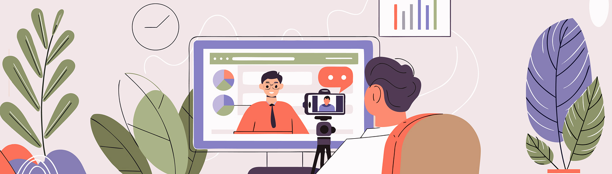
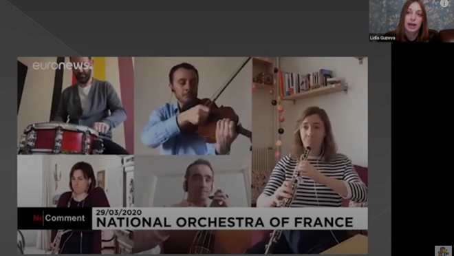
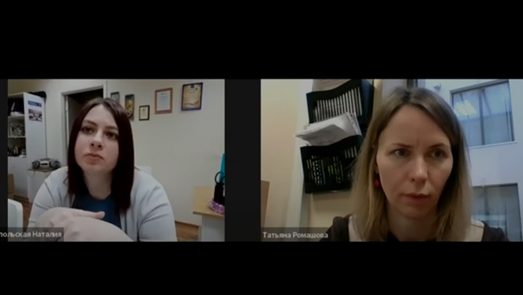
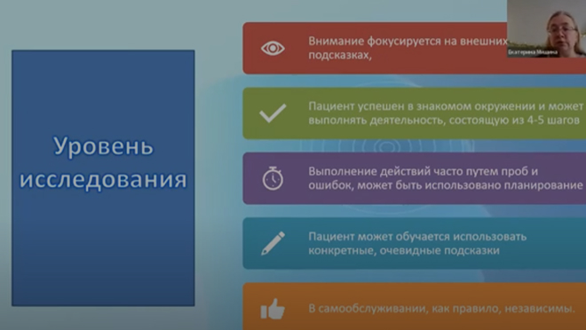
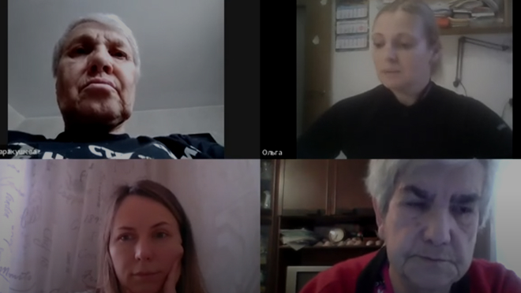
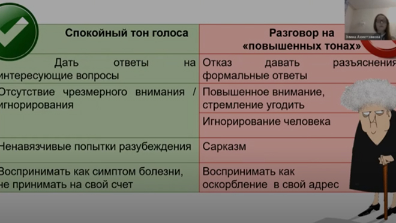
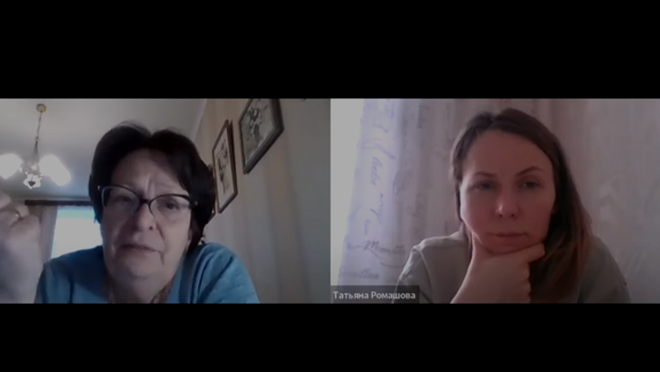
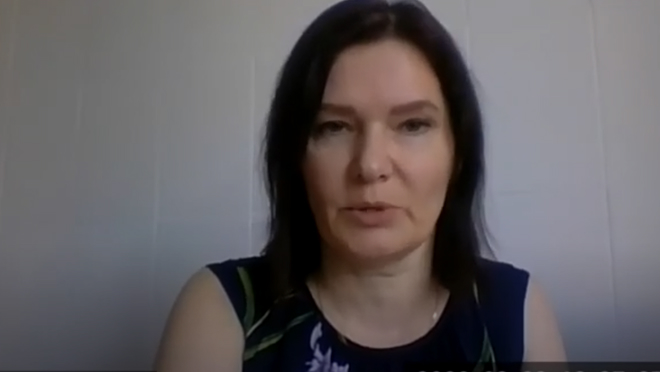
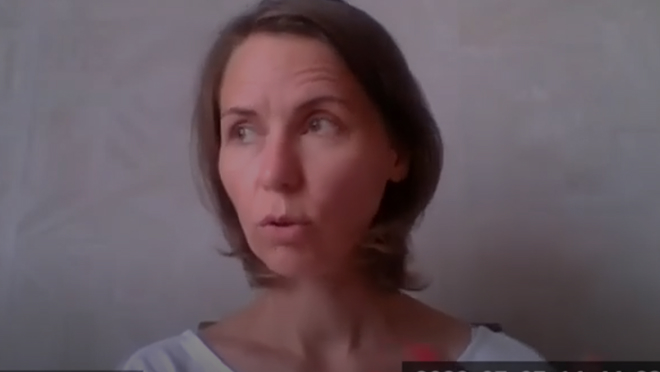
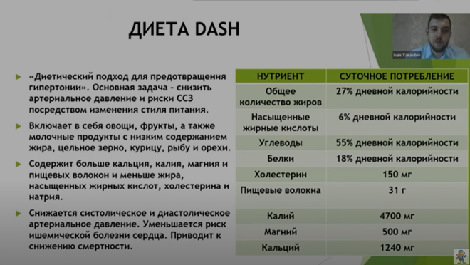

В 2021–2022 годах Благотворительный центр «Хэсэд Авраам» и Женская еврейская организация «Проект Кешер» провели цикл вебинаров «Деменция. Как быть рядом», адресованный родственникам людей с деменцией, но представляющий интерес также для социальных работников и специалистов по уходу

#01
Деменция. Взгляд изнутри
О ключевых причинах и признаках деменции, об основных принципах профилактики и лечения когнитивных нарушений

Лидия Ивановна Гузева
Член Ассоциации неврологов Санкт-Петербурга, ведущий врач-невролог Международного медицинского центра «Согаз»

#02
Основы проведения когнитивного тренинга
Об основных принципах построения и проведения занятий по тренировке памяти, внимания и мышления пожилых людей
Наталия Анатольевна Краснопольская
Клинический психолог Центра памяти и здоровья Благотворительного центра «Хэсэд Авраам»

#03
Эрготерапия в работе с людьми с деменцией
О принципах эрготерапии для восстановления утраченных функций пациентов, в том числе с помощью особой организации пространства и быта
Екатерина Анатольевна Мишина
Врач-невролог, эрготерапевт

#04
Поддержание двигательной активности в пожилом возрасте и старше
О ключевых аспектах сохранения физической активности
Ольга Юрьевна Карогодская
Специалист по реабилитации, методист по лечебной физкультуре Центра памяти и здоровья Благотворительного центра «Хэсэд Авраам»

#05
«Плохое» поведение: как помочь пожилому человеку и сберечь себя
Об основных поведенческих нарушениях у пожилых людей и о том, как c ними взаимодействовать, не выгорая эмоционально
Элина Маратовна Ахметзянова
Клинический психолог Национального медицинского исследовательского центра психиатрии и неврологии им. В.М. Бехтерева

#06
Гарантированная государственная помощь. Практические рекомендации
О законах, программах и социальных службах, которые могут быть полезны семьям, заботящимся о близких с деменцией
Лариса Петровна Рохлина
Руководитель службы кейс-менеджеров Благотворительного центра «Хэсэд Авраам»

#07
Практические рекомендации по получению социальных услуг
Информация для родственников, ухаживающих за людьми с деменцией: куда и зачем можно обратиться, какие документы оформлять и на что рассчитывать
Светлана Сергеевна Игнатенко
Кейс-менеджер Благотворительного центра «Хэсэд Авраам»

#08
Психологические рекомендации для родственников
Практические советы, как ухаживающим родственникам совладать с различными сложными проявлениями близкого человека с деменцией и при этом успешно справляться с собственным стрессом
Татьяна Владимировна Ромашова
Клинический психолог Центра памяти и здоровья Благотворительного центра «Хэсэд Авраам»

#08
Особенности питания лиц пожилого возраста
Об особенностях работы организма человека в пожилом возрасте и о том, какой вклад правильное питание вносит в реабилитацию людей с деменцией
Иван Викторович Яковлев
Врач-гериатр, терапевт, врач по гигиене питания